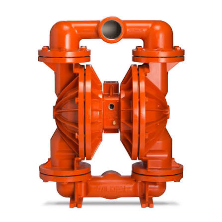

Air Diaphragm Pump
A double diaphragm pump for transferring fluids, chemicals and slurries in industrial applications.
Product details
Sizes/specifications: Contact us to confirm available models and compatibility.
Common uses: Transferring compatible fluids, chemicals and slurries in industrial settings.